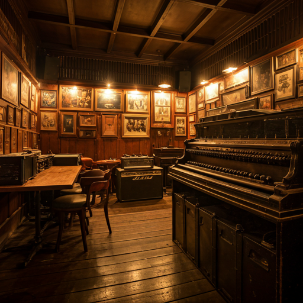

Audience footfall
We work to bring people into the room, not just list events online.
Live4Fair works with venues and cultural spaces to bring thoughtfully curated live performances into the city, with member support and a cultural coordination layer already built into the pilot.

Every venue has its own rhythm, identity, audience, and practical constraints. A good night depends on the room, the neighborhood, the operational fit, and the people who gather there.
We work to bring people into the room, not just list events online.
Live programming can create energy, repeat visits, and a stronger identity for the space.
We care about fit instead of forcing the wrong act into the wrong room.
Collaborations are formalized through written event agreements covering roles, responsibilities, and event terms.
Live4Fair is strongest for underused, community-oriented, or off-peak spaces that want more cultural life without taking on the full programming burden alone.
We are especially interested in places where live culture can create genuine local value, not only commercial throughput.
Capacity, technical realities, staffing, timing, and the kind of experience that makes sense in the space.
Artists and formats are paired with spaces where they can actually work and feel right.
Written event agreements cover fit, responsibilities, financial terms, surplus handling, and operational conditions.
Audience traffic, cultural profile, bar or food revenue, and stronger participation in a local network.